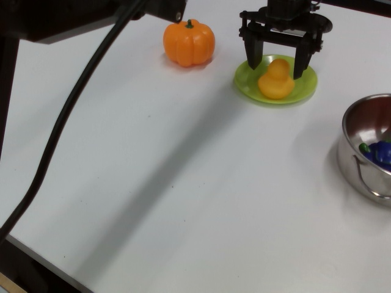
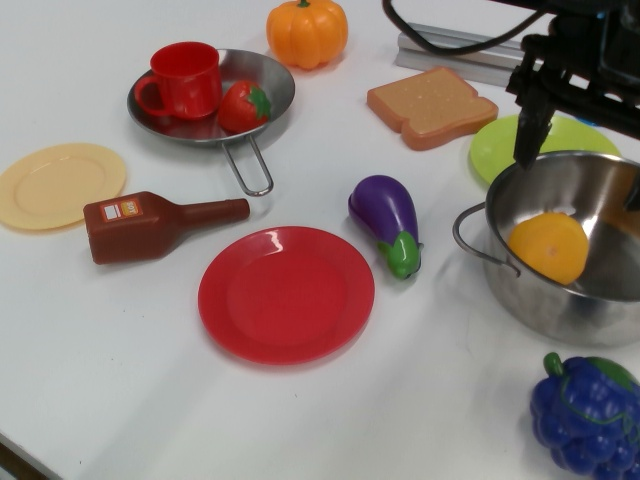
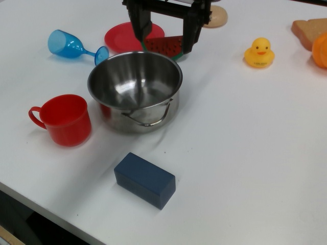
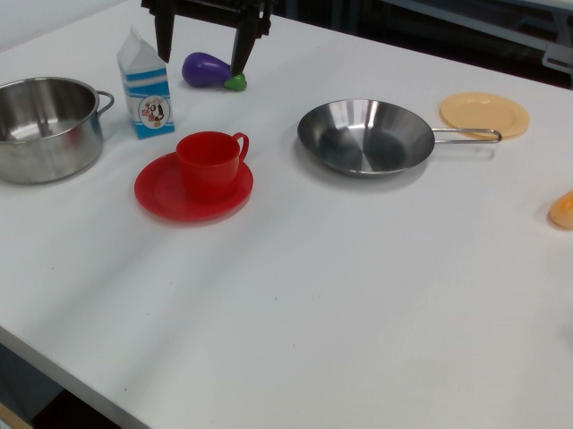
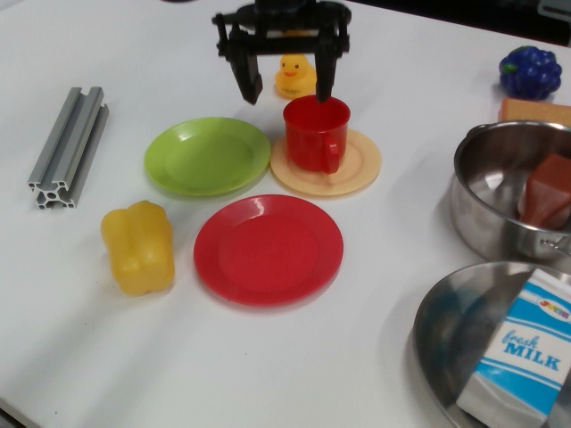
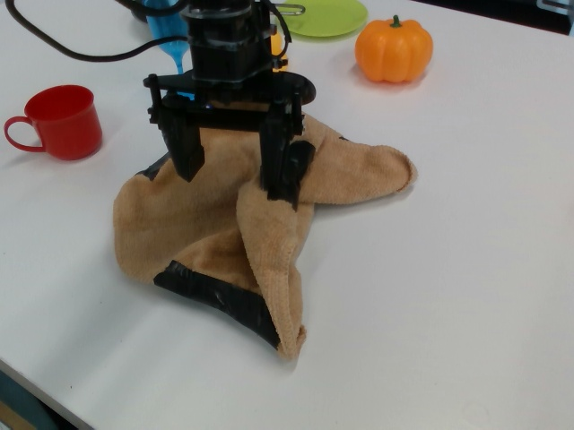

Multimodal task specification is essential for enhanced robotic performance, where Cross-modality Alignment enables the robot to holistically understand complex task instructions. Directly annotating multimodal instructions for model training proves impractical, due to the sparsity of paired multimodal data. In this study, we demonstrate that by leveraging unimodal instructions abundant in real data, we can effectively teach robots to learn multimodal task specifications. First, we endow the robot with strong Cross- modality Alignment capabilities, by pretraining a robotic multimodal encoder using extensive out-of-domain data. Then, we employ two Collapse and Corrupt operations to further bridge the remaining modality gap in the learned multimodal representation. This approach projects different modalities of identical task goal as interchangeable representations, thus enabling accurate robotic operations within a well-aligned multimodal latent space. Evaluation across more than 130 tasks and 4000 evaluations on both simulated LIBERO benchmark and real robot platforms showcases the superior capabilities of our proposed framework, demonstrating significant advantage in overcoming data constraints in robotic learning.
We train Robo-MUTUAL constrained on dataset that only visual/textual goals are available, and evaluate the performance on textual&visual goals.
Figure 1: Real robot experimental results. Success rate is averaged over 10 episodes and 3 seeds.
train on Visual eval on Textual
Given task: "put the duck in the green plate"
train on Textual eval on Visual
Given task: 
train on Visual eval on Textual
Given task: "put the duck in the pot"
train on Textual eval on Visual
Given task: 
train on Visual eval on Textual
Given task: "move the pot from right to left"
train on Textual eval on Visual
Given task: 
train on Visual eval on Textual
Given task: "put the red cup on the red plate"
train on Textual eval on Visual
Given task: 
train on Visual eval on Textual
Given task: "flip the red cup upright"
train on Textual eval on Visual
Given task: 
train on Visual eval on Textual
Given task: "fold the cloth from right to left"
train on Textual eval on Visual
Given task: 
We train Robo-MUTUAL on 130 tasks on LIBERO benchmark. Robo-MUTUAL achieves the highest success rate when evaluated with modality which doesn't appear in training dataset, demonstrating its effectiveness in achieving multimodal task specification via unimodal training.
Figure 2: Simulation experimental results. Success rate is averaged over 10 episodes and 3 seeds.
If you find our code or paper can help, please cite our paper as:
@article{li2024robo,
title={Robo-MUTUAL: Robotic Multimodal Task Specification via Unimodal Learning},
author={Li, Jianxiong and Wang, Zhihao and Zheng, Jinliang and Zhou, Xiaoai and Wang, Guanming and Song, Guanglu and Liu, Yu and Liu, Jingjing and Zhang, Ya-Qin and Yu, Junzhi and Zhan, Xianyuan},
journal={arXiv preprint arXiv:2410.01529},
year={2024}
}
Thanks to the great efforts of open-source community: LIBERO, DecisionNCE, BearRobot.